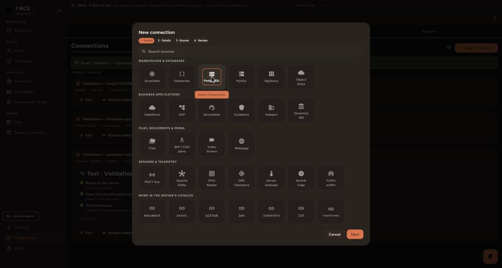
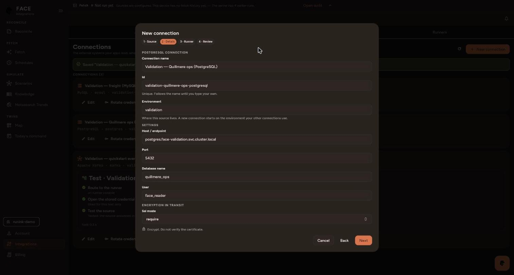
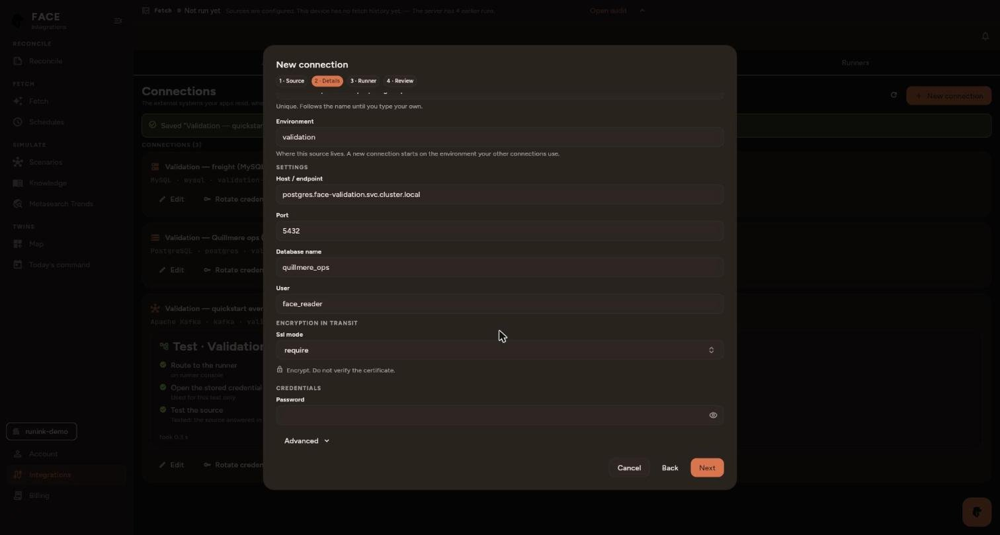
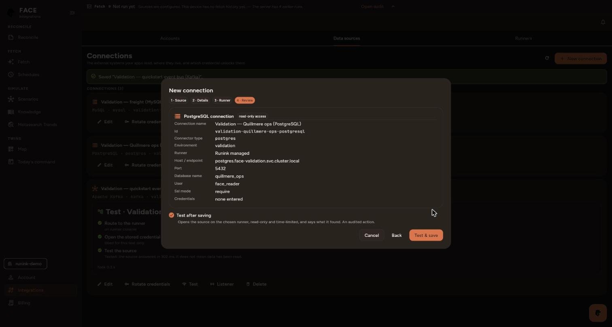

PostgreSQL
Warning: The test-estate safety rule: stand the test estate up only beside a test instance, never a production deployment. Its systems are throwaway test services with published credentials:
change-meis every test credential. They are still encrypted and still ask for a login, because FACE refuses a connection that is not (see Connector security). Use a scratch machine or a scratch cluster.
Grade A · dataset: SQL (DDL and rows in the engine's dialect) · type postgres
What it is
A PostgreSQL database. In the test estate it is Quillmere's operational system, schema ops: customers and their delivery sites, warehouses (three distribution centres and a retail store), yards and docks; the item master (ops.items: every SKU with its name, category, EAN-13 and the words a camera or OCR reads off it); a year of orders, 2025-10-01 to 2026-09-29 with the 2025 holiday season in it, and the shipments that served them, leg by leg; the fleet, the site and yard equipment with their readings against stated limits, and the maintenance work orders; inventory, reorder policies and replenishment orders; route plans, their stops and their revisions; freight invoices, claims, their evidence and correspondence. The connector reference is SQL warehouses and databases.
Grade
A. Open source. It stands up locally from the download, with the model and its rows, end to end. Any PostgreSQL 13 or later works; the dataset is verified on 16.15.
See the grade table for all 32 types.
Settings and credentials
From the connection catalogue. Settings are ordinary fields on the connection record. Credentials are kept in a sealed bundle and never returned.
| Names | |
|---|---|
| Type | postgres |
| Other spellings that resolve | postgresql |
| Settings | host, port, database, username, ssl_mode |
| Credentials | password |
The test connection
Quillmere ops (Postgres)
| Setting | Test value |
|---|---|
host |
pg.quillmere.invalid |
port |
5432 |
database |
quillmere_ops |
username |
face_reader |
ssl_mode |
require |
Credentials: password. In the test estate, every credential is change-me. Credentials are write-only: they go into the sealed credential bundle and are never returned.
Stand up the test system
The safety rule at the top of this page comes first: a scratch machine or a scratch cluster, never a production or platform one.
- Download
postgres.zipand unzip it. It holdspostgres/01_schema.sql, the rows inpostgres/02_data_01.sqltopostgres/02_data_16.sql(load them in name order), andpostgres/expected.json. Start a scratch PostgreSQL 13 or later with TLS on, because
ssl_moderequireneeds it. The official image ships a self-signed certificate you can use for a test:docker run --rm -e POSTGRES_PASSWORD=change-me -p 5432:5432 postgres:16 \ -c ssl=on \ -c ssl_cert_file=/etc/ssl/certs/ssl-cert-snakeoil.pem \ -c ssl_key_file=/etc/ssl/private/ssl-cert-snakeoil.keyCreate the database and the reader role, then load the schema and the rows, in that order:
psql -h localhost -U postgres -c "CREATE DATABASE quillmere_ops" psql -h localhost -U postgres -c "CREATE ROLE face_reader LOGIN PASSWORD 'change-me'" psql -h localhost -U postgres -d quillmere_ops -f postgres/01_schema.sql $(for f in postgres/02_data_*.sql; do printf -- '-f %s ' "$f"; done) psql -h localhost -U postgres -d quillmere_ops -c "GRANT USAGE ON SCHEMA ops TO face_reader; GRANT SELECT ON ALL TABLES IN SCHEMA ops TO face_reader"- Add the connection with the settings above, as Create it in the Console shows. Replace
pg.quillmere.invalidwith the address of your scratch engine: a.invalidname never resolves.
Create it in the Console
The screens below were taken on a live instance, adding the quickstart's database as Runink hosts it. Your host is your scratch engine's address; every other value is the test connection's.
- Open Settings › Integrations › Systems and select New connection.
Source: under Warehouses & databases, select PostgreSQL, then Next.

Details: fill in the settings.
| Field | Value | |---|---| | Connection name | a name you will recognise, for example
Quillmere ops (PostgreSQL); the Id follows it | | Environment | where this source lives, for exampledevorstaging| | Host / endpoint | your engine's address | | Port |5432| | Database name |quillmere_ops| | User |face_reader| | Ssl mode |require(encrypt, do not verify the certificate). Use a verifying mode when the engine's certificate is from a CA your runner trusts. FACE refusesdisable,allow,preferand an unset mode. |
Scroll to Credentials and enter the reader's Password. It is sealed when you save and never shown again.

Runner: keep Runink managed, or pick a registered runner that can reach the engine, then Next.
Review: check the values. Credentials reads none entered until you type the password in step 4. Keep Test after saving ticked and select Test & save.

The new connection appears in the list with a credential stored chip and the test's result. It shows as a source on Ask and in every brief's source list. To read it, see Ask.
What FACE finds
FACE reads the catalogue: information_schema, with the declared primary and foreign keys, every COMMENT ON table, view and column as the dataset's and field's description, and each view's definition (pg_get_viewdef). Partitions and relations an extension owns (such as pg_stat_statements' views) are not listed as datasets; the discovery says how many were left out. A test loads this dataset into an empty engine, runs FACE's discovery, and compares the result with the expected model (TestSynthUniverseDiscoveryMatchesExpected).
| Dataset | Kind | Domain | Primary key | Rows | Fields |
|---|---|---|---|---|---|
ops.customers |
table | customers | customer_id |
7 | 5 |
ops.customer_sites |
table | customers | site_id |
18 | 11 |
ops.warehouses |
table | warehouse_ops | warehouse_id |
4 | 11 |
ops.yards |
table | yard | yard_id |
4 | 10 |
ops.docks |
table | warehouse_ops | dock_id |
9 | 5 |
ops.items |
table | product_catalog | sku_id |
22 | 5 |
ops.orders |
table | orders | order_id |
4736 | 6 |
ops.order_lines |
table | orders | order_id, line_no |
7793 | 5 |
ops.transfer_hubs |
table | shipments | hub_id |
9 | 9 |
ops.suppliers |
table | inventory | supplier_id |
8 | 7 |
ops.supplier_items |
table | inventory | supplier_id, sku_id |
26 | 7 |
ops.vehicles |
table | telematics | vehicle_id |
49 | 14 |
ops.vehicle_shifts |
table | telematics | shift_id |
270 | 5 |
ops.vehicle_positions |
table | telematics | vehicle_id, observed_at |
1728 | 7 |
ops.site_assets |
table | warehouse_ops | asset_id |
51 | 10 |
ops.asset_channels |
table | warehouse_ops | channel_id |
183 | 10 |
ops.asset_readings |
table | warehouse_ops | channel_id, read_at |
12124 | 3 |
ops.maintenance_work_orders |
table | warehouse_ops | work_order_id |
391 | 12 |
ops.shipments |
table | shipments | shipment_id |
3351 | 26 |
ops.shipment_legs |
table | shipments | shipment_id, leg_no |
3663 | 18 |
ops.reefer_readings |
table | cold_chain | shipment_id, leg_no, read_at |
2632 | 6 |
ops.temperature_excursions |
table | cold_chain | excursion_id |
31 | 10 |
ops.inventory_positions |
table | inventory | sku_id, warehouse_id |
64 | 11 |
ops.reorder_policies |
table | inventory | sku_id, warehouse_id |
54 | 16 |
ops.replenishment_orders |
table | inventory | replenishment_id |
1066 | 14 |
ops.route_plans |
table | shipments | route_plan_id, plan_version |
172 | 10 |
ops.route_stops |
table | shipments | stop_id |
757 | 21 |
ops.route_plan_revisions |
table | shipments | revision_id |
20 | 14 |
ops.freight_invoices |
table | freight_audit | invoice_id |
3308 | 10 |
ops.claims |
table | claims | claim_id |
235 | 12 |
ops.claim_evidence |
table | claims | evidence_id |
822 | 6 |
ops.claim_messages |
table | claims | message_id |
712 | 7 |
ops.remediation_orders |
table | claims | remediation_id |
56 | 10 |
ops.yard_moves |
table | yard | move_id |
418 | 9 |
ops.gate_events |
table | yard | event_id |
408 | 8 |
The tables of schema recovery (read by the connection postgres-recovery, not by postgres-operations) are described in Dangerous goods and luxury assets; their row counts are the generator's (TestSynthOpsRecoveryTables) and are not restated here.
Every table declares its primary key, and the relations are declared foreign keys: an order to its customer and warehouse, a shipment to its order, origin warehouse, destination site, dock and tractor, a leg and its reefer readings to their shipment, a channel's readings to the channel, a policy and a replenishment order to the supplier's item, a stop to its plan version and shipment, a revision to the plan version it produced and to the revision that triggered it, evidence and messages to their claim. expected.json lists every one.
What the rows let FACE show
| Scenario | Tables | What FACE does with them |
|---|---|---|
| Routes | shipments (origin_warehouse_id, dest_site_id, status, transport_mode, temp_min_c/temp_max_c), customer_sites (lat/lon) |
the run's routes phase draws every pending shipment from its warehouse to its customer site, with the tightest temperature band the routed shipments state |
| Reactive fulfilment | inventory_positions (on_hand, available, lead_time_days), orders + order_lines |
the site page computes safety stock and a reorder point per item from the lead time, the daily demand and the cycle-service level your organisation sets in Admin, and shows the items under it after the last demand spike |
| Fleet planning | route_stops (a dispatch feed's columns: vehicle_id, stop_sequence, latitude/longitude, demand_kg, vehicle_capacity_kg, planning_speed_kmh, window_start/window_end, temperature_min_c/max_c), vehicles (status, capacity, reefer capability), vehicle_shifts |
the fleet planner's stops, beside the GPS fixes of the live fleet topic |
| Recursive re-plans | route_plan_revisions (trigger_kind, triggered_by_revision_id, legs_before/legs_after) |
the history of re-plans, an excursion's re-plan triggering a delay re-plan, a reassignment and the receiving plan's re-plan |
| Predictive maintenance | site_assets, asset_channels (each limit and its source), asset_readings, maintenance_work_orders |
30 days of readings to check a projection against what happened; the live readings are on the Kafka equipment topic |
| Cold chain | shipment_legs (band per leg), reefer_readings, temperature_excursions |
time out of band per leg |
| Claims | claims, claim_evidence, claim_messages (sent, replied, resolved, closed), remediation_orders |
follow a claim from filing to close |
| Item lookup | items (name, category, aliases, ean), inventory_positions |
find an item by the word a detector or OCR produces (teddy bear, pikachu, husky) or by its EAN-13, then its stock at each warehouse |
| The 2025 holiday season | orders + order_lines from 2025-10-01, replenishment_orders, route_plans, route_plan_revisions |
a season to forecast the next from: the toy line's lift from November to Christmas (the teddy bear steady, the Pikachu plush breaking out, the husky plush running out on its 24-day supplier lead time), a smaller lift on household items, the peak-season replenishment orders, and the demand_spike re-plans of Black Friday week and the pre-Christmas peak |
| The store's window | warehouses (the store ST-NAPERVILLE: Naperville, IL, US, with lat/lon), its orders + order_lines (point-of-sale tickets), inventory_positions, replenishment_orders, items, supplier_items |
a retail store to arrange a shop window for: a spring-2025 Easter line received in March and April 2025 and selling down through 2026 (past collection: months of cover, sales now under 0.8 of the four weeks before), the Pikachu and unicorn plush rising through August and September, and tickets that carry both, so a bundle's evidence is in the store's own baskets |
| Dangerous goods and luxury assets | schema recovery: goods (UN numbers, hazard classes, packing groups; serialised watches, handbags, jewellery, wine, art), mode_rules, consignments + legs (road, rail and sea), sensor_readings, incidents, declarations, loss_claims, facilities, reverse_orders, custody_events, disposal_certificates, environmental_report, and the trade side trade_measures, trade_exposures, trade_lanes, trade_providers, trade_suppliers, trade_responses; the goods are also rows of ops.items |
which hazardous and high-value shipments are at risk right now, what happened to each, the nearest facility whose licence was valid on the day, and the certificates and report rows that close the loop. Read by the connection postgres-recovery as its own role, because face_reader already sees the 40 tables a fetch sweeps in ops. See Dangerous goods and luxury assets |
Late deliveries, invoices over the contracted rate and claims filed past the carrier's window occur at about 15%, 12% and 15%. About one asset in twelve has a service overdue.
Where the sites are
ops.warehouses and ops.yards give every warehouse and yard a postal address and coordinates, so a fetch of this source puts them on the twins Map: FACE writes a Site entity for each row, placed by the coordinates the row states (lat/lon on warehouses, latitude/longitude on yards), with the address and the docks of ops.docks on its page. FACE never geocodes an address: a site with only an address is listed, not placed.
The customer delivery sites (ops.customer_sites), the suppliers and the carriers' depots stand at real city centroids: the U.S. Census Bureau's 2024 Gazetteer internal point of an Illinois or Indiana city, with no street address. FACE places a destination at the coordinates the row states.
The distribution centres are authored for this quickstart, not measured. The cities, postal codes and coordinates are real places, a point in an industrial district of each city, so the Map puts each site somewhere true. No street address is a real business's.
| Site | Address | Latitude, longitude |
|---|---|---|
WH-NORTH Quillmere North DC |
2250 Wexcombe Parkway, Elk Grove Village, IL 60007, US | 42.0031, -87.9706 |
YARD-NORTH Quillmere North Yard |
2290 Wexcombe Parkway, Elk Grove Village, IL 60007, US | 42.0043, -87.9689 |
WH-EAST Quillmere East DC |
4100 Harlowfield Drive, Plainfield, IN 46168, US | 39.7148, -86.3417 |
YARD-EAST Quillmere East Yard |
4150 Harlowfield Drive, Plainfield, IN 46168, US | 39.716, -86.3399 |
WH-SOUTH Quillmere South DC |
7300 Ostley Commerce Road, Edwardsville, IL 62025, US | 38.7742, -90.0389 |
YARD-SOUTH Quillmere South Yard |
7340 Ostley Commerce Road, Edwardsville, IL 62025, US | 38.7754, -90.0371 |
The same sites, with the same addresses and coordinates, are in whs (facility) and yms (yards).
expected.json in the download has the full model: every field with its logical type, the source's native type and nullability.
How it joins the Quillmere universe
This source carries 12 of the universe's shared keys. The same ID means the same thing in every source: a shipment here is the same shipment in the database, the event bus, the GPS track and the claim PDF.
| Universe entity | Fields here | Also in |
|---|---|---|
| asn | shipments.asn_id |
logisticsapi, whs |
| carrier | shipments.carrier_id |
d365, document, files, guidewire, mysql, objectstore, redshift, sharepoint, tms, yms |
| customer | customers.customer_id, orders.customer_id |
files, hubspot, kafka, oms, redshift, salesforce, sap, snowflake |
| customer_po | orders.customer_po |
files, hubspot, kafka, oms, snowflake |
| device | docks.camera_id, docks.rfid_reader_id |
bigquery, cctv, databricks, files, gps, iot, kafka, mqtt, rfid, servicenow |
| dock | docks.dock_id, shipments.dock_id |
cctv, excel, files, kafka, logisticsapi, sensorgateway, whs, yms |
| order | order_lines.order_id, orders.order_id, shipments.order_id |
document, files, hubspot, kafka, oms, sap, snowflake |
| shipment | shipments.shipment_id |
bigquery, d365, databricks, document, excel, files, github, guidewire, iot, kafka, logisticsapi, mqtt, mysql, objectstore, redshift, salesforce, sap, servicenow, sharepoint, tms, whs, yms |
| sku | order_lines.sku_id |
ims, inventory, logisticsapi, oms, sap, snowflake |
| trailer | shipments.trailer_id |
cctv, databricks, document, excel, iot, kafka, mqtt, servicenow, tms, yms |
| warehouse | docks.warehouse_id, orders.warehouse_id, warehouses.warehouse_id, yards.warehouse_id |
inventory, oms, redshift, tms, whs, yms |
| yard | warehouses.yard_id, yards.yard_id |
yms |
Evidence it holds for the planted anomalies:
- ANOM-4, A duplicate customer PO.
postgres/02_data_01.sqlinpostgres.zip, look for'PO-0002-4194'(two order rows).
See all connectors at once for the walkthrough across every source.
Download
postgres.zip: 18 files,expected.jsonincluded.
This is one of 25 zips: the 7 streaming types ship as replay recordings instead.
What is in the zip
- `postgres/01_schema.sql` - `postgres/02_data_01.sql` to `postgres/02_data_16.sql` - `postgres/expected.json`The whole universe is universe.json. manifest.json lists every download with its size and SHA-256, and SHA256SUMS is the same list for sha256sum -c.